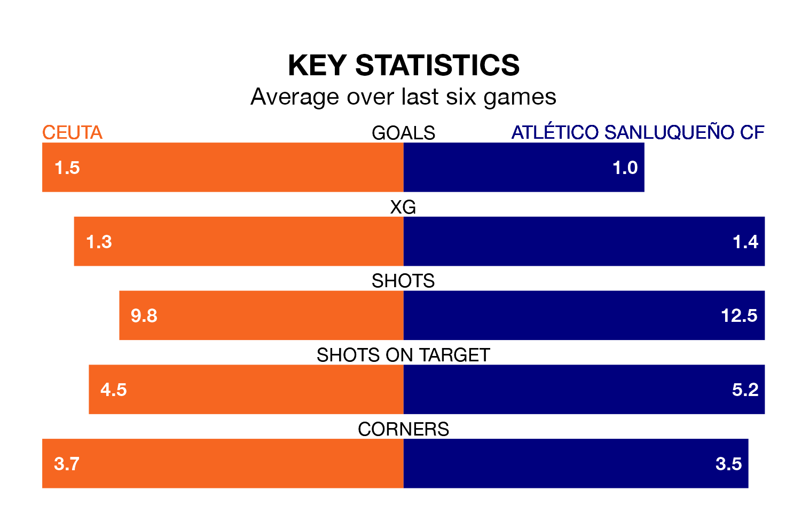

Atlético Sanluqueño CF face Ceuta on Sunday seeking to protect their formidable unbeaten run in Primera Division RFEF Group 2.
Atlético Sanluqueño are unbeaten in eight, with four wins and four draws, ahead of the 11am kick-off.
They face a Ceuta team who have won three and drawn three over the same number of games.
With 29 goals in 27 games so far this season, Atlético Sanluqueño are scoring at the league's average rate with 1.1 goals per game. And they are conceding fewer than average, letting in 27 goals at a rate of 1.0 per game.
Ceuta are also average scorers, with 1.1 goals per game. They have conceded 1.0 goal per game.
In Pedro López Galisteo, the hosts can rely on one of the league's safest pair of hands. He has kept nine clean sheets in his 23 appearances this season in Primera Division RFEF Group 2.
In the away side's net, Samuel Pérez Fariña has seven clean sheets in 19 games.
Ceuta are sixth in the table after 27 games, of which they have won 10 and drawn 10, earning 40 points.
Atlético Sanluqueño are seven places behind Ceuta in 13th, with eight wins and 10 draws putting them on 34 points.
Ceuta's last match was on March 10, a 1-0 win against Granada B.
Atlético Sanluqueño drew 0-0 with Málaga CF last time out, also on Sunday.
Updated: 15:10 (UTC), 15/03/24